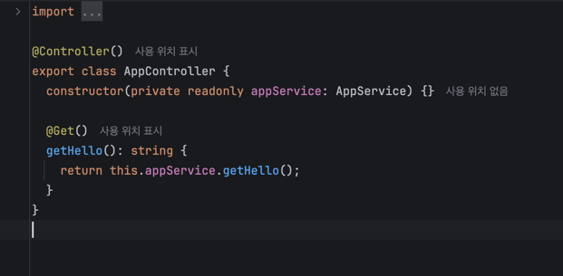
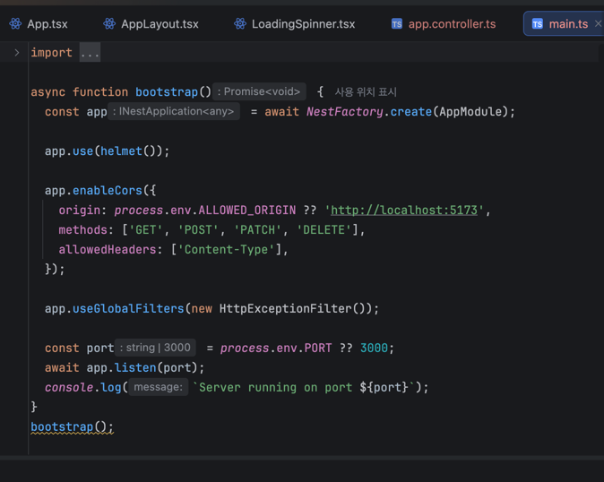

개발일지(1차)
|
개발기간 |
2026년 3월 6일 – 3월 19일 |
||
|
학 번 |
3110 |
성 명 |
이동현 |
|
프로젝트 주제 |
배고 — 위치 기반 식사 추천 서비스 (Web-view App) |
||
|
기능 구현 및 진행상황 |
* 이번 주 목표 및 진행률
- 요구사항 정의 및 팀 일정 계획 수립 — 100% 완료 - Notion 프로젝트 보드 구성 — 100% 완료 - 네이버 Cloud Platform API 등록 및 키 발급 — 100% 완료 - ERD 작성 (MySQL 4개 테이블 + Redis 키 설계) — 100% 완료 - API 명세서 초안 작성 — 70% 완료 (엔드포인트 목록 확정, FE 팀과 응답 포맷 합의 미완)
* 주요 개발 내용
1. 프로젝트 기획서 작성 (ver 1.0) - 서비스 개요, 핵심 기능, 기술 스택, WBS(8주 일정)를 포함한 기획서 완성 - 팀원 R&R 확정: 조성현(FE UI/UX), 김시우(FE 기능/연동), 이동현(PM & Backend) - 개발 기간: 2026.03.06 ~ 2026.04.25 (총 8주)
2. Notion 프로젝트 보드 구성 (PM 역할) - 주차별 마일스톤 설정, GitHub Issues/Milestones 연동 - 팀 Discord 채널 및 주 2회(월·목) 스탠드업 소통 규칙 수립
3. Naver Cloud Platform API 키 발급 - Naver Search API (Local), Naver Maps API, Reverse Geocoding API 등록 - .env 파일 구조 및 키 보안 관리 방식 결정 (서버사이드 환경변수, 클라이언트 노출 차단)
4. DB 설계 (ERD 작성) - MySQL 8.x: tbl_users, tbl_user_preferences, tbl_selection_history, tbl_favorites 4개 테이블 설계 - 테이블 관계: tbl_users 1:1 선호도, 1:N 이력, 1:N 즐겨찾기 (ON DELETE CASCADE) - Redis 7.x: 식당 목록 캐시(TTL 1,800초) / 역지오코딩 캐시(TTL 86,400초) / Rate Limit 카운터(TTL 60초) 키 패턴 확정 - MVP 단계는 회원가입 없이 device_id 기반 사용자 식별 방식 채택
5. API 명세서 초안 작성 - GET /api/restaurants (위치 기반 식당 조회, 파라미터: lat, lng, category, radius, sort) - GET /api/geocode (역지오코딩, 행정동 주소 반환) - POST /api/users, GET/PATCH /api/users/{device_id}/preferences - POST/GET /api/history, POST/DELETE/GET /api/favorites - 응답 포맷(카멜케이스 필드명, 에러 코드 구조)은 FE 팀과 합의 진행 중
※ 첨부: DB 설계서(ERD 포함) 문서, API 명세서 초안, Notion 프로젝트 보드 스크린샷, GitHub 마일스톤 설정 화면
 [그림 1] NestJS AppController 소스코드 — @Controller, @Get 데코레이터 기반 라우팅 구조
 [그림 2] NestJS main.ts 소스코드 — helmet, CORS, 전역 예외 필터 적용 서버 부트스트랩 |
||
|
이슈 관리 및 해결 과정 |
* 발생한 이슈 (Issue): - Naver Cloud Platform API 쿼터 확인 중, Local Search API 무료 등급이 하루 1,000건으로 제한됨을 발견. 팀 전체가 동일 Client ID를 공유하므로 개발 테스트 요청만으로도 쿼터 조기 소진 위험이 있음.
* 원인 분석: - 팀원 3명이 각자 로컬에서 개발·테스트 시 동일 API 키로 반복 호출하면 실제 서비스 배포 전에 일일 한도에 도달할 가능성이 높음. API 키를 개인별로 분리 발급하는 구조도 고려했으나 팀 단일 키 관리가 원칙이므로 사용량 최소화 전략이 필요함.
* 해결 과정 및 결과 (Resolution): - Redis 캐싱 전략을 서버 설계 단계에서 확정 (식당 목록 TTL 30분, 역지오코딩 TTL 24시간) - 개발·스테이징 환경에서는 Mock 응답 JSON 파일을 별도 작성하여 실제 API 호출 없이 테스트하기로 팀 합의 (Naver API 공식 문서 및 요금 정책 페이지 참조) - 생성형 AI(Claude) 활용: Redis TTL 전략 및 키 패턴 설계 검토에 활용하여 최적 TTL 값 결정 - 결과: 쿼터 관리 정책 팀 내 공유 완료, DB 설계서에 Redis 키 패턴 명문화
|
||
|
KPT 회고 및 차주 계획
|
* Keep (유지할 점): - ERD를 팀 전체가 리뷰하며 합의한 것이 효과적이었음. 이후 연동 단계에서 테이블 구조 관련 혼선이 없었음. - Notion + GitHub Issues 이중 관리 체계로 팀원별 진행 상황을 한눈에 파악 가능.
* Problem (문제점/아쉬운 점): - API 명세서 응답 포맷이 FE 팀과 완전히 합의되지 않은 채로 1~2주차 종료. FE 팀이 mock 데이터 기반으로 개발을 먼저 진행하게 되어 실제 API 전환 시 포맷 재조율이 필요한 상황. - 팀 구성 첫 주라 역할 분담 후 소통 채널 정립에 시간이 소요되었음.
* Try (시도할 점/개선 방향): - 3주차 초에 FE 팀과 API 응답 포맷 싱크 미팅 1회 진행하여 명세서 최종 확정. - 매주 월·목 정기 스탠드업(15분)을 Discord에서 고정 진행하여 진행 상황 공유 구조화.
* 차주(3~4주차) 개발 계획: - Docker 개발 환경 구성 (docker-compose.yml: Node.js 20 + Redis 7.x) - Node.js + Express 프록시 서버 초기화 (routes/controllers/services/middlewares 구조 설계) - Naver Search API / Reverse Geocoding Wrapper 모듈 완성 - .env 기반 API 키 보안 설정 및 팀원 공유 방식 결정 (GitHub Actions Secrets 예정) |
||